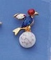
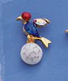

Week 1_1 Results (2015/04/17)
Week 1_1 Results (2015/04/17)Week 1_1 Results (2015/04/17)
The Results, Standings, Low Net and Low Scratch pages for the first week of the season have been posted!
Also available are the Golfer History Report, the Golfer Match history and the Golfer by Course (nine) report. I am now only using this year's data for these 3 reports, but here is link for the Golfer History Report which includes last years rounds.
The handicap list showing each golfers next handicaps are available sorted by either handicap or by name.
Congratulations to Birdie men for the week: | ||
|  |
|
 |
Week 1_1 Schedule (2015/04/12)
Click here to see the schedule for the first week of the 2015 season.
Check out the weather forecast for Ramblewood Country Club.
Here are the final 2014 handicaps sorted by handicap or by name.